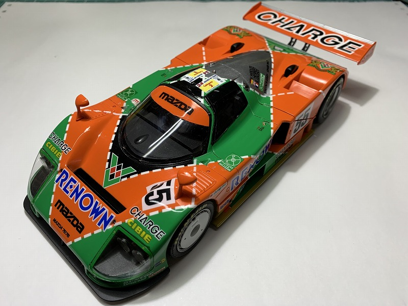
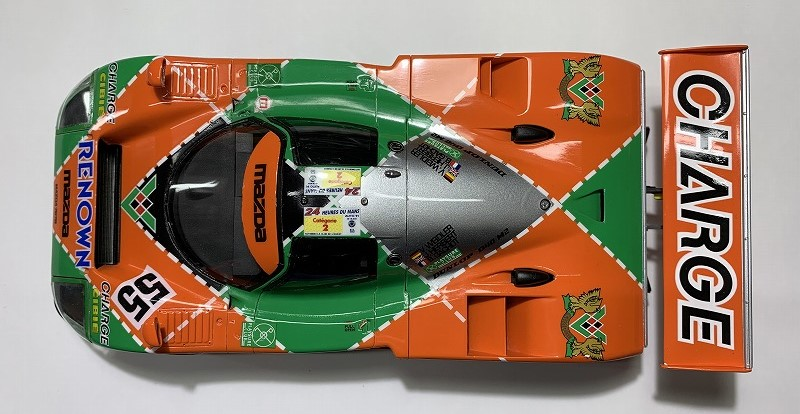

TAMIYA 1/24 Mazda 787b
1991年のル・マン24時間優勝
７８７Ｂ －１
２０１９年頃に作製
アンテナは未作成です。細部の色塗りも省略していて残念です。このプラモデルは本当に根気が必要でした。
デカールを貼るプラモデルは、冬場がいいですよ！
７８７Ｂ －２

右サイド。５５のゼッケンを貼った後に切断していますが、研ぎ出し中に割れました。ここら辺が今後の改善ポイントです
７８７Ｂ －３
右サイド後方。ちなみにリアウィングは未接着です。
７８７Ｂ －４

前から。ヘッドランプカバーの緑色のデカールが浮いて来てます。研ぎ出しをしていないせいでしょうか？
作製後のメンテナンスは必要ですね・・。
７８７Ｂ －５

左サイド。ドアミラー後方のエアダクトは、それなりに穴を空けてます。
７８７Ｂ －６
ワイパーがありませんね・・。何処に行ったのでしょうか？。後から探します。
少しの接着剤で固定すると、後から外れたりするので、棚から出す時には注意が必要です。
７８７Ｂ －７

ヘッドライトは、既成の丸い輪っか以外は自作したような記憶があります。なんかショボかった記憶が・・。
プラモデルとは言え、目（ヘッドライト）の見栄えは大事です。
７８７Ｂ －８
ま右サイド。この角度が一番きれいですね。
７８７Ｂ －９
真上から。
７８７Ｂ －１０

真後ろから。エンジンは下手過ぎて見せられません。
７８７Ｂ －１１
確か、タイヤはデカールを貼って乾いた後、実車のタイヤにも使用する「アーマオール」を塗布しています。
黒光りします。
７８７Ｂ －１２
いつかは、「ハセガワ 1/24 ７６７Ｂ」 も作製して、白の７８７と３台並べたいですね。